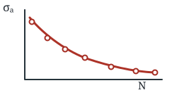
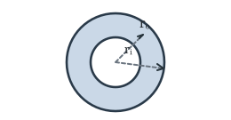
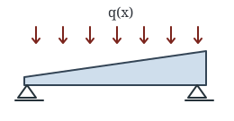

Objetivo del curso
Profundizar en el análisis de esfuerzos, deformaciones y condiciones de falla de elementos mecánicos y estructurales, aplicando métodos que permitan evaluar su resistencia y comportamiento frente a distintas cargas.
Aplicaciones en ingeniería
- Análisis de vigas y estructuras
- Resistencia y fatiga de componentes
- Estudio de placas y cilindros
Principales temas del curso
Explora las seis unidades académicas y consulta el material ya existente.

Esfuerzos
Bases del comportamiento elástico y deformaciones.
Explorar unidad
Criterios de Falla y Fatiga
Criterios de resistencia y cargas cíclicas.
Explorar unidad
Elementos Curvos
Esfuerzos y deformaciones en miembros curvos.
Explorar unidad
Placas Planas
Flexión de placas rectangulares y circulares.
Explorar unidad
Cilindros de Pared Gruesa y Volantes
Cilindros gruesos y elementos en rotación.
Explorar unidad
Vigas de Sección Variable
Análisis de vigas con geometría variable.
Explorar unidadAcerca de la plataforma
Este sitio académico fue desarrollado como un recurso de consulta para estudiantes de ingeniería y personas interesadas en Resistencia de Materiales. Organiza artículos, ejercicios resueltos y referencias para facilitar el estudio autónomo.
Conoce el proyecto